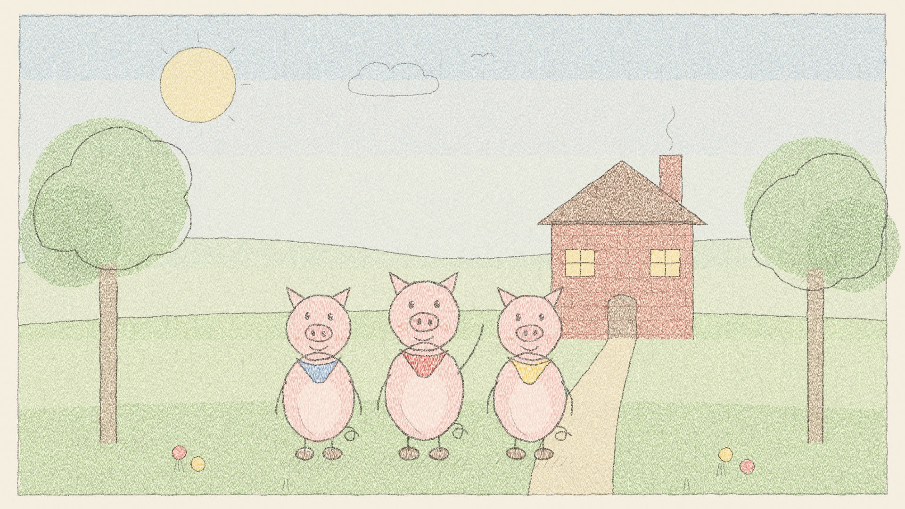

Ba chú heo con, chuyện kể trước giờ ngủ
Ba chú heo con, kể lại nhẹ nhàng trước giờ ngủ theo truyện cổ nước Anh của Joseph Jacobs. Ba ngôi nhà, một con sói thổi phù phù và một chú heo con thật thông minh, không ai bị đau cả. Trong tập này: - Nhà rơm, nhà gỗ và nhà gạch - Củ cải, quả táo và chiếc thùng đánh bơ lăn xuống dốc - Con sói chui ống khói và rơi tõm vào nồi nước lạnh Nguồn: Three Little Pigs, Joseph Jacobs, D. L. Ashliman Nhạc: Kevin MacLeod (incompetech.com), CC BY 4.0 Những câu chuyện nhẹ nhàng cho giờ đi ngủ và giờ kể chuyện, được kể chậm rãi bằng một giọng đọc ấm áp. luongnv.com/podcast/stories
Nghe trên Once Upon a Time Show Tải MP3 Lời kể
Truyện này còn có bản: English, Français
Dựa theo Three Little Pigs